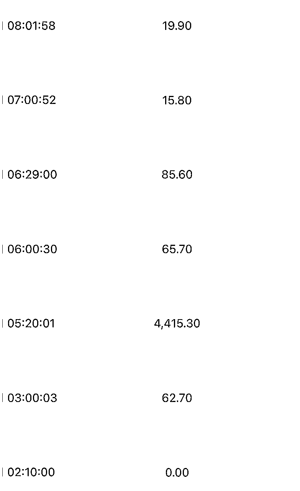

来源：https://n4dbdw6xhe.feishu.cn/docx/L39kdUeRoomorOxhEZxcrcxGneb
（无广无微信纯净版）
大家好，我叫戴小胖 ，抖音ip同名， 93年， 10年的内容行业创业者，干过广告 mcn 电商，加入生财有术3年了吧，一直在潜水，最近开始分享，有点紧张，希望大家给点鼓励。 先说我是干嘛的，目前主营是小红书电商和小红书ip，小红书电商，月千万级。
本人商业IP，月变现100w。小红书疗愈+声音ip的体量在200w粉丝，变现体量1000w+。
电商体量多个店铺都是月100w以上，最高单店单月800w，单条笔记带货最高80w，并且退货率在8%，冬季产品略高，退货率在20%以内，业内无人能出其右。
今天分享：单店月销200W+，小红书电商最强打法保姆级教程。内容较长。详情移步至飞书
本文目录：
小红书部分数据展示
一：小红书目前最强打法——爆服务器大法
二：底层逻辑
三：小红书搬运素材
四：小红书批量化素材生产
五：电商实拍爆款素材保姆级攻略
六：素材配比思路
七：小红书电商的一些注意事项
我原创的小红书目前最强打法——爆服务器大法，所有在做和准备入局小红书电商的都一定要学会。
爆服务器大法：无限堆号堆量堆笔记 用绝对的数量去战胜概率。
我们之前的打法 10w条笔记战术 一个账号一天50条笔记 一个月200多w 。
今天先分享底层逻辑 再分享实操方法。
1、批量薅平台的低保流量。你这么想，你每发一条笔记 ，平台都会送你一张200播放的流量券，发一条 送200，免费的流量不要白不要。另外对于精准受众的素材，其实不需要高播放量，你看我这些笔记 只有40的阅读 还能出好几单。
2、用绝对的数量去战胜概率。小红书是所有平台中流量分配最让人摸不到头脑的平台，但也是最有机会的平台的。我们有些下楼取快递随手拍的笔记 播放 1600w播放 50w gmv。 这样的笔记还有很多。 为什么这么爆，因为我发了10w条啊，能跑出几条千万播放不奇怪吧。
这个方法不需要你生产任何内容，直接洗现成的爆款内容排列组合变成你的爆款。
我举个例子 ：
第一步：准备2篇同行爆款进行元素拆解，分别拆成爆款封面A和爆款封面B 爆款内容A和爆款内容B
第二步：利用去重软件进行100%去重。
第三步：重新排列组合，去重后的爆款封面A+去重后的爆款内容B为一篇笔记，去重后的爆款封面B+去重后的爆款内容A为一篇笔记，接着再用GPT 洗出2个爆款标题 分别搭配。
理论上 只要你有20篇爆款笔记，去重排列后就能产出200篇原创组合笔记，再随机搭配20个爆款标题，你就能裂变出 4000篇爆款笔记。
如果你要稳定原创日产1000篇笔记，其实也很简单。
模版获客类：10个爆款背景*10个爆款话题*10个爆款标题=1000条爆款素材。
电商实拍类：10个固定爆款角度*10个固定爆款产品*10个固定爆款场景=1000条爆款素材。
以电商实拍类为例，
1、先找两个站内正在爆的笔记，最好是低粉爆款的笔记
2、拆解，从标题、封面、文案、内容、tag词进行详细拆解
视频爆款要素拆解
live图笔记爆款要素拆解
3、像素级模仿，找到自己产品可利用的爆款点，进行像素型模仿

快速批量生产素材的核心无非就是内容模版化，生产流程化。我们在这个方面做了大量工作，利用爬虫技术，搜集大量低粉爆款笔记，每周都会更新当周最新的低粉爆款笔记，进行拆解和极致模仿。
那么最后一个问题来了，怎么日产100w条笔记，答案很简单——堆量。1台手机堆1000条，1000台手机就能堆100w条。这套方法已经被社群、学员包括食品、女装、养生、百货...各类目都验证过，完全可以直接上手。
先分享2个爆款素材制作的小技巧。
1.点击➕
2.选择并上传你的live图素材
3.选择贴纸功能
4.选择相册贴纸上传你的价格截图或者好评截图，调整位置发布即可。
其实live除了实拍，搬运或者视频抽帧也可以做。我这里拿我自己拍的一段素材举例，很多新手直接拍图拍不好，不妨拍视频 然后抽帧，你拍一段3分钟的素材 选10个最好的3s片段做live图总可以吧
1、打开编辑软件
2、导入视频素材
3、选择最好的3s素材
4、点击右上角3个点 选择保存为live图。
这个方法既可以作为新手的输出live的方法，也可以站外去搬运爆款素材，然后你做去重和抽帧输出爆款live素材。
我给大家4个最关键的要素：灯光 角度 背景 焦距
首先灯光是实拍中最重要的也是最容易被忽视的细节，推荐大家 3500-4000k的中性无影灯当主灯，当然你没有预算也可以充分利用自然光，可以选择下午四五点隔着窗帘的那种柔光。
角度的话没什么好说的就是看到千赞的爆款笔记，跟着他的角度一模一样的抄。
背景的话推荐大家从低到高慢慢过渡，可以先去多多花个一两百买摄影假道具、然后慢慢过渡到高质量的背景 ，直接去小红书高级感软装，很多配件都有详细介绍，你直接照着买二手或者平替就好了。
最后一个就是焦距。这里我直接上2组焦距对比图，不同的焦距质感完全不一样。很多时候一样的角度一样的背景别人能爆你爆不了就是焦距不对。
live的初阶是随意，你越随意流量越好，你越刻意流量越差。随意的背后是真诚分享，小红书的爆款素材永远是随意的买家秀而不是卖家秀。
live的进阶是随意 但只是看似随意，实则一张图800个心眼子。像极了你的绿茶闺蜜，说好的大家都不化妆，然后他花了个裸感清纯妆，说好的随便穿，结果他穿得满满心机。你是随意了，但是流量和目光都让你绿茶闺蜜抢走了。
所以小红书的live进阶是 有所随意 有所不随意。
我以女装举例，
场景随意 上班场景 居家场景 落叶场景
视角随意 角度随意 爆款的角度一定是随意的角度 不可能是板板正正的角度。
那不随意的是什么呢?配饰不随意，模特的身材气质不随意 灯光不随意 穿搭不随意，你以为他是随便穿的，实际上他为了显瘦各种遮髋遮胯各种oversize各种凹造型。
最后营造出一种富家千金刚刚脱下她的卡地亚，穿上贫穷女大学吊带的感觉。让用户向往！
这是什么，这就是网感，这就是爆款的网感。
live图
优点： 高点击率 高转化率 高加购率 高爆发力 产出高效 新人上手快
缺点： 基础流量小 爆发周期短。
视频：
优点：爆发力久 持久稳定、绝对天花板高，爆款视频有连续爆6个月，单条视频变现百万加的实力。
缺点：产出效率较低 新手把握不好
1、起号阶段：建议live90%+视频10% 原因很简单，live图上手简单 转化高，即使40个小眼睛也能出几单，可以快速堆量怼素材，博概率 博一条高爆发的爆款笔记，方法得当一般3天必爆，7天就能上榜一。
2、大店阶段：live30%+视频70%。一般能稳定做到200万以上大店，人员素质和素材质量其实已经很高了，而且店铺权重足够高，所以需要多配爆发持久的视频，即使视频做的像一堆垃圾，店铺权重和链接链接权重也会放视频框框出单，等视频转化高了之后，又会有大量的猜你喜欢的视频流量进来，让视频顺爆连爆持续爆。视频生产力拉满之后，再用一些视频边角料或者live来补齐一个账号一天50条笔记的产能
3、常规阶段：大多数单月几十万的团队其实素材产出能力没有那么强，个人建议live70%+ 视频30% 保障爆发和输出效率。
4、常规进阶：live50%+视频50% live减少同质化场景（+30%新鲜小元素+多布景） 增加视频 消耗产能 增加持久力，同时增加视频笔记也可以有效避免最严新规对素材同质化和不真诚营销的打击。
如何有效避免最严新规对素材同质化和不真诚营销的打击？
第一个，拥抱实拍 ，掌握实拍的技术之后，实拍的效率是远远高于搬运混剪。
你拿变现效率高的live图的，一条3000赞的live 可以卖6000单 变现大几十万，实拍live 图一天可以拍上千张。 10个固定爆款角度x10个固定爆款场景x10个固定爆款产品=1000条爆款笔记。
第二个，低成实拍场景搭建，你直接搜索：100块打造高级感场景，香奶奶挂画 好看的壁炉 等等低价好看 高质量场景随心打造，祝你实拍更上一层楼
第三个 必须多品策略。单一产品单一脚本 爆款重复发已经被严厉打压，你要铺量博概率吃低保流 博大流量，就必须多品多sku。每个sku都铺适量的素材才行。
实操方法：
1物理隔离 场景隔离 绝不能俩号同场景同角度铺——多搭场景就完了
2主账号 只在起号阶段发笔记 3天冲到榜一 子账号接住流量之后 就不发了
3.适当增加视频的比例，最近明显发现视频的流量逆势增长了。
4.拍摄的时候，尽量多一些新鲜元素，比如配饰 比如咖啡 比如闺蜜。多元素搭配避免同角度和场景的违规。
5.可以通过对标A封面B文案C标签的形式，把内容重组。最起码能降到30%重复值以下，有效避开系统检测。
量小间隔1小时 ，量大间隔半小时，根据你的量去做发布间隔排列
配比：白天30篇，半夜10篇。白天手动间隔 40分钟/篇，
比如 白天每发3篇定时晚上发一篇。 12点发一篇 12点40发一篇 1点20发一篇，然后1点40定时发一篇 凌晨1点的，再循环，2点发一篇......
我们的时间间隔参考：

今天的分享就到这里，感觉有帮助的小伙伴请点点小赞~